# 语义分割
# 常见分割任务
- 语义分割
- 实例分割
- 全景分割
# 常见语义分割评价指标
# Pixel Accuracy / Global Acc 像素准确率
这是最直观的指标，反映了模型对所有像素点分类正确的比例。
：表示第 类被正确预测为第 类的像素数量（对角线元素）。
：表示第 类总共包含的像素点数量。
所有分类正确的像素总数 图像像素总数。
局限性：由于它计算的是全局准确度，如果图像中某个类别如背景占比极大，PA 就会被该类别主导，无法反映模型对小目标的识别能力。
# mean Accuracy 平均准确率
为了解决上述类别不平衡问题，该指标先计算每个类别的准确率，再取平均值.
：类别的总数。
：第 个类别的分类准确率。
意义：它给每个类别（无论大小）分配了相同的权重。如果你的任务中包含很多细长或微小的物体，这个指标比 PA 更有参考价值。
# mean IoU 平均交并比
分母： 实际上就是并集。它由 “真实区域” 加上 “预测区域”，再减去重复计算的 “交集部分” 组成。
分子： 就是 ** 交集 。
核心逻辑：。只有当预测的形状与真实的形状高度重合时，mIoU 才会接近 1。
# 一个例子
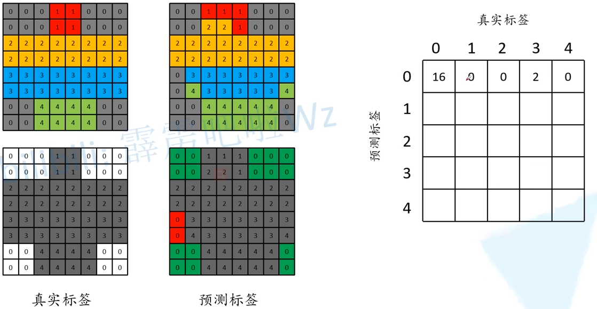 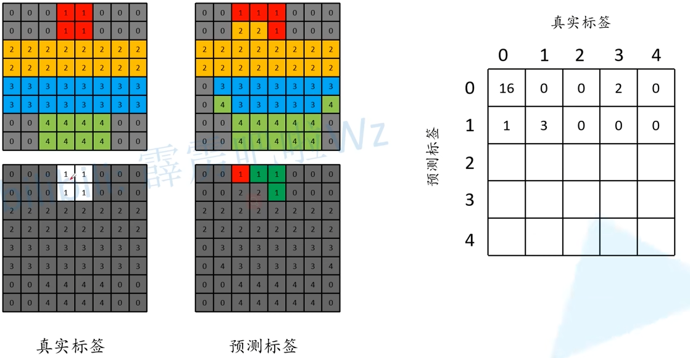 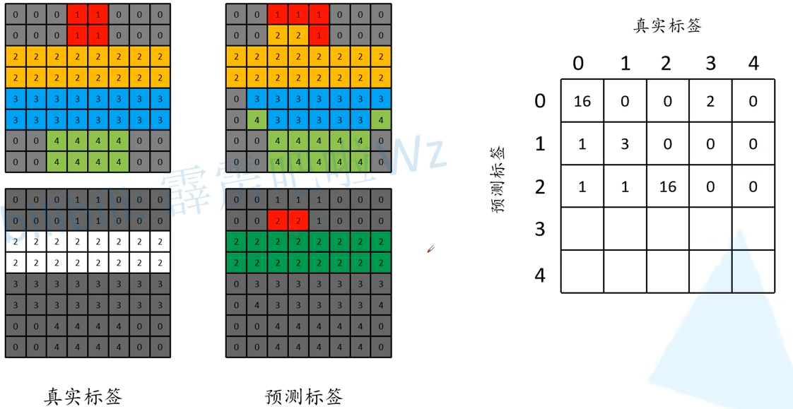 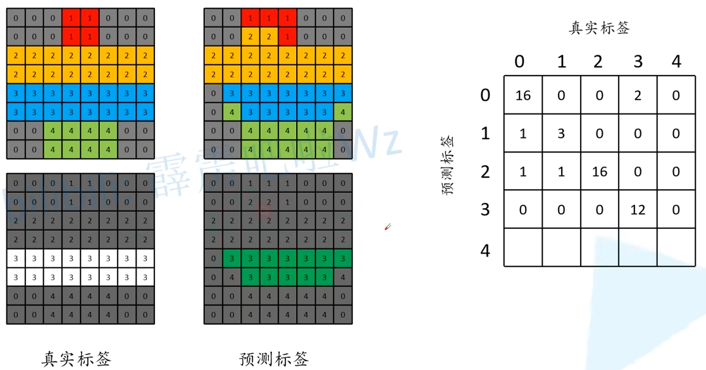 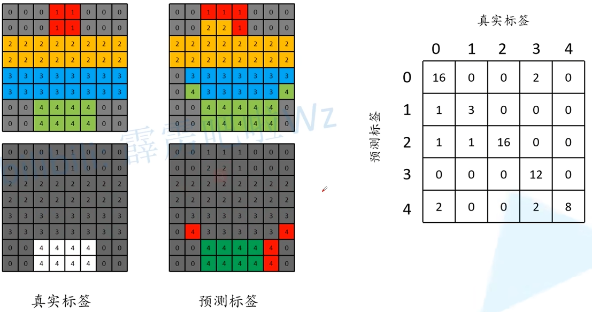# 全局准确率
# 平均准确率
分母是列之和，分子是对角那个元素。
，，，，cls0_{acc}=\frac{8}
# 平均交并比
分母是行与列之和减去重复部分那个，分子就是对角线那个元素。
，，，，cls0_{IoU}=\frac{8}
# Transposed Convolution 转置卷积
Transposed Convolution/ fractionally-strided / deconvolution
转置卷积不是卷积的逆运算
N.B.: Blue maps are inputs, and cyan maps are outputs.
| No padding, no strides, transposed | Arbitrary padding, no strides, transposed | Half padding, no strides, transposed | Full padding, no strides, transposed |
| No padding, strides, transposed | Padding, strides, transposed | Padding, strides, transposed (odd) |
# 下采样 vs 上采样
普通卷积：主要用于特征提取和空间降维（下采样）。通过滑动窗口将多个输入像素映射为一个输出像素，通常会减小特征图的尺寸。
转置卷积：主要用于恢复空间分辨率或进行可学习的上采样。将一个输入像素映射到多个输出像素，从而产生比输入更大的输出特征图。常用于语义分割、生成对抗网络等需要还原图像尺寸的任务。
# FCN
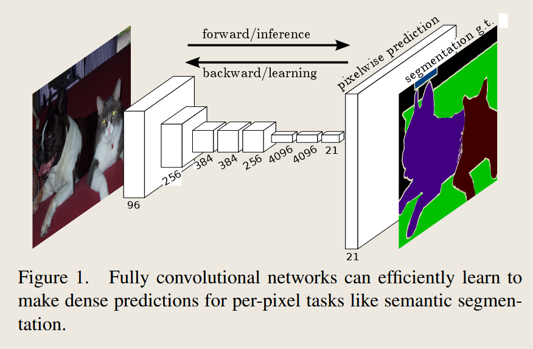21 深度就是 21 种类别，VOC 是 20 类然后还有一个是背景一共 21 类，然后经过上采样得到每一个像素的类别就完成分割了，FCN 使用全卷积操作，这避免了全连接层对图片大小的严格限制所导致的报错问题。
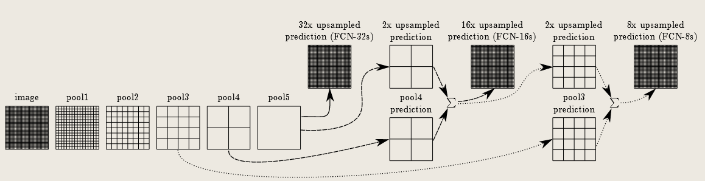其实这个主要是把 VGG 的全连接层修改为卷积，当然还有更多细节，下面是 FCN-32S，即直接进行对 pool5 的 32 倍上采样，VGG16 的骨干网络就是对原图进行 32 倍下采样
# FCN-32S
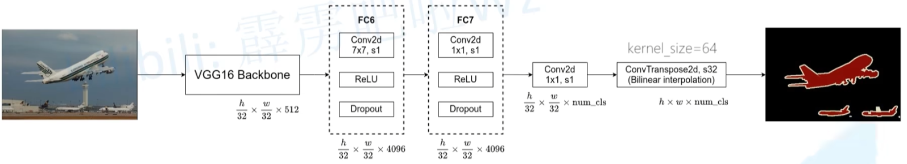# FCN-16S

# FCN-8S
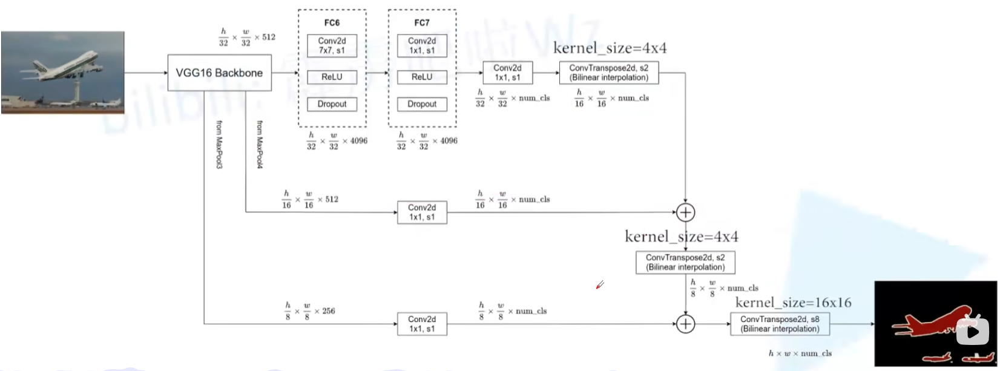# FCN 损失函数 - 像素级多类别交叉熵损失
对于单张图片，总损失 定义为：
FCN 的损失函数是对每一个像素进行 softmax 分类交叉熵后，在对全图进行平均。
# 空洞卷积 / 膨胀卷积
PyTorch 深度学习 - 基础 - 深度学习 | KarryLiu = 诗岸梦行舟 = 分享计算机知识以及各种心得总结
增大感受野，一般我们会主动保持特征图大小。
# FCN 模型训练
现在基本上把骨干网络都换成 ResNet-50 了。
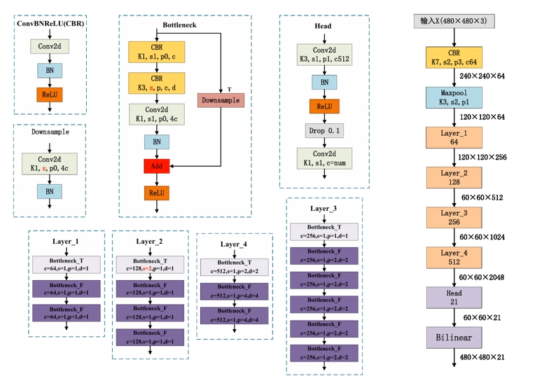环境为 RTX 3080 x4 基于 fcn_resnet50: https://download.pytorch.org/models/fcn_resnet50_coco-1167a1af.pth 预训练权重训练 20 轮。
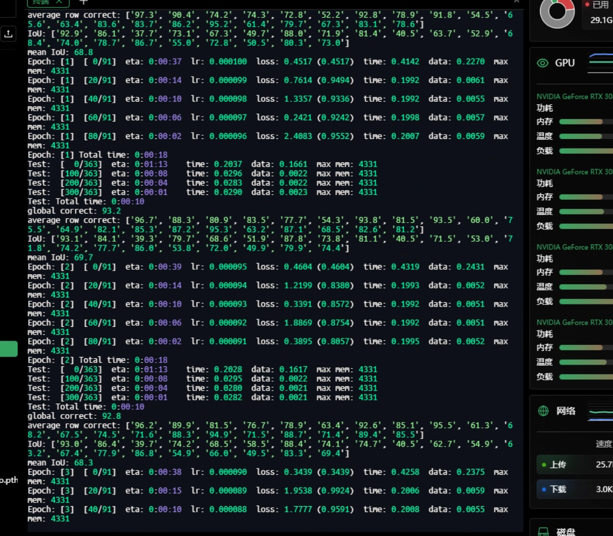结果：
实际上这个预训练已经不错了，我这 20 轮基本上没啥贡献，也就让 meanIoU 提升了一点点。。
# U-Net
U-Net 是由 Ronneberger 等人于 2015 年提出的一种端到端的全卷积网络，主要用于像素级分类。
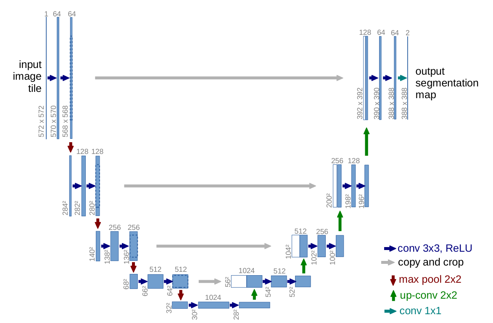这个中间的连接并不是全像素的连接，他会从源特征图裁剪一部分连接到上采用后的特征图。

# 在 DRIVE 数据集上进行训练
DRIVE 数据集一般指的是是视网膜血管分割领域最经典、使用最广泛的数据集之一。
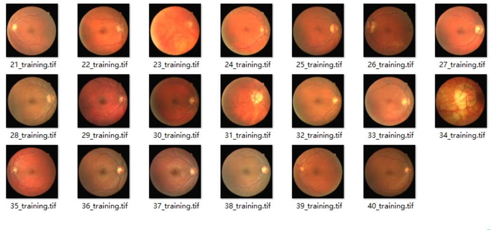 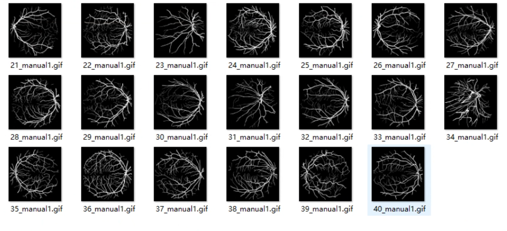200 轮训练后…
[epoch: 199] | |
train_loss: 0.3152 | |
lr: 0.000000 | |
dice coefficient: 0.814 | |
global correct: 95.3 | |
average row correct: ['97.2', '82.0'] | |
IoU: ['94.7', '68.8'] | |
mean IoU: 81.7 |
CamVid 是语义分割领域里一个非常经典、但规模较小的自动驾驶场景数据集，经常被用来做教学、算法验证和轻量实验。真实城市驾驶视频 + 像素级语义标注。
# VOC 镜像站
https://data.brainchip.com/dataset-mirror/voc